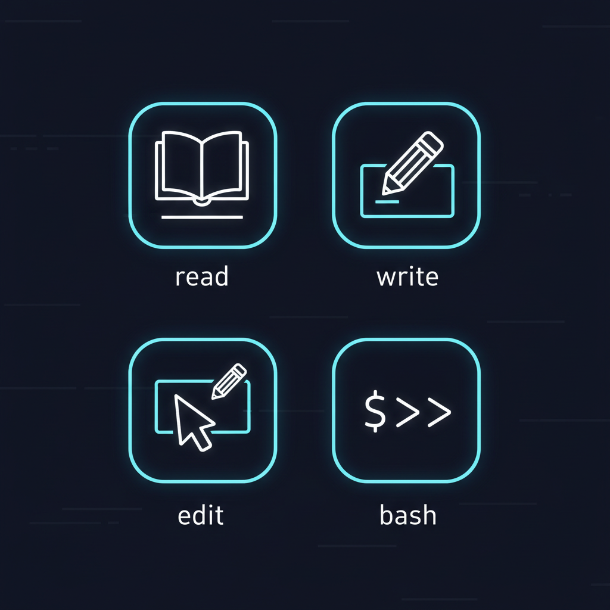
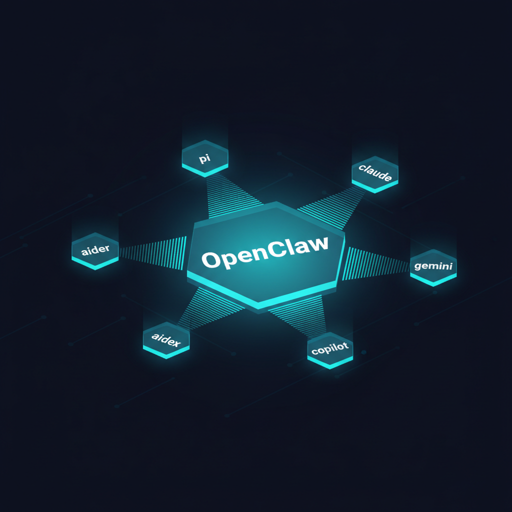

OpenClaw Community — March 2026
How I orchestrate 16 CLI agents into one workflow
Prompts are code,— Mario Zechner, Pi Creator
.json and .md files are state.
4 tools. Zero MCP. Maximum control.
Pi's Radical Minimalism
read, write, edit, bash
MCP Servers
Bash CLI Tools
From coding agent to personal agent
As Armin Ronacher describes it
16 CLIs, one orchestration layer
The Full Stack
| Layer | Tools | Role |
|---|---|---|
| Local Agents | pi claude gemini codex aider goose amp cursor | 8 coding agents, any model, any provider |
| Remote Backends | gh agent-task jules-client.sh e2b | Cloud sandboxes — fire-and-forget builds |
| Platform | OpenClaw | Pi as a personal agent connected to chat |
| Tool CLIs | docker gh beepctl pi-messenger | Infrastructure + coordination |
Why Multi-CLI Matters
Deterministic wrapping non-deterministic
The Core Pattern
# [D] Pre-compute — zero tokens wasted on exploration
git diff --name-only main..HEAD > changed.txt
pnpm test --json > test-results.json
# [N] Agent works with perfect context
pi "Read context.json and implement the fix"
# [D] Deterministic quality gates
pnpm lint && pnpm test
# [N] Agent reviews its own work
pi "Review the diff for bugs"
# [D] Ship it
gh pr create --fillMario proved this at scale
generate-porting-plan.js pre-computes entire changesetporting-plan.json = state on disk — resume from any pointjq queries as the function library — pre-written, testedHow it all connects
OpenClaw = Pi + Chat
pi-ai SDK under the hood — same models, same toolsmcporter bridges MCP servers as CLI tools when needed
How I Actually Use It
| Task | Tool | Thread Type |
|---|---|---|
| Quick bug fix (in-loop, tight steering) | pi or claude | Single session — 1 agent |
| Feature implementation | Pi subagent chain: scout → plan → build → review | C-Thread (sequential pipeline) |
| PR triage (50 PRs in parallel) | 50× codex dispatch → JSON signal reports | P-Thread (massively parallel) |
| Research question | 3 Opus deep + 5 Haiku wide → consolidate | F-Thread (fusion) |
| Full end-to-end: issue → PR | Blueprint Engine: minion.sh | B-Thread (orchestrator) |
| OpenClaw from phone | WhatsApp → OpenClaw → runs pi → reports back | Chat-triggered agent |
Someone already shipped this
jayminwest/overstory — MIT licensed, on npm
ov sling, ov merge, ov trace, ov costsWhat actually works and what doesn't
What Works
What Doesn't
Nobody knows yet how to do this properly. We are all just throwing shit at the wall, declaring victory, while secretly crying over all the tech debt.— Mario Zechner, Year in Review 2025
Why this matters beyond code
The intelligence displacement spiral
For the OpenClaw Community
4 tools + extensions + skills. Learn the minimal core before adding complexity. Read Mario's blog.
225-token READMEs. Not MCP servers. Agent reads the docs, invokes via bash. Composable, cheap.
Run git diff, lsp, tests BEFORE the agent touches anything. Zero exploration waste.
Lint, format, test, commit — these steps don't hallucinate, don't cost tokens, don't break.
Pi's SDK powers OpenClaw. Your extensions work in both. One agent, everywhere.
Track cost per PR, CI pass rate, tool calls per thread. If you can't measure it, you can't improve it.
The canary is still alive.— Citrini Research, Feb 2026
We still have time to be proactive.
Links & Resources
github.com/badlogic/pi-monoopenclaw.aimariozechner.atlucumr.pocoo.org/2026/1/31/pi/steipete.me